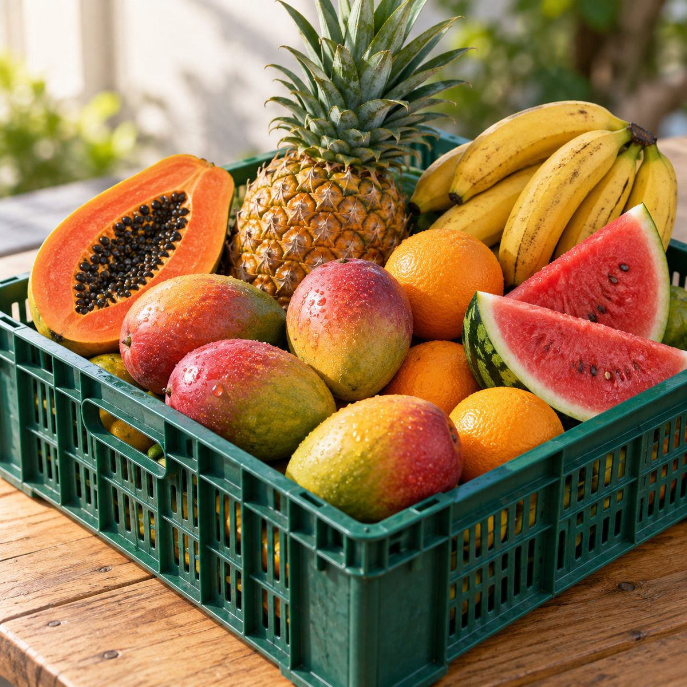

H13Image H13Save as H13.jpg or H13.png, 1600 x 1600 px
Hyper realistic food photograph. A green plastic produce crate overflowing with freshly harvested Ghanaian fruit: ripe mangoes blushing red and yellow, a whole golden pineapple with its green crown, a halved papaya showing glossy black seeds, a hand of yellow bananas, bright oranges, and two juicy wedges of red watermelon. Fine water droplets on the skins. Shot as one matching set: the same pale natural wood table, soft natural window light from the left, gentle shadows, a full frame camera with an 85mm lens at f/4, shallow depth of field, crisp detail on every texture. The food fills the center of the frame with a little space around it. No people, no hands, no brand names or logos. 1:1 frame. Photorealistic, natural light, true to life colors, no text or watermarks.
Fruit
Mangoes, pineapples, papaya, bananas and more.